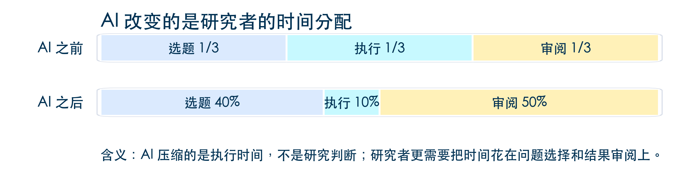

Day 1 上午：一站式科研范式与软件环境搭建
江西财经大学数字经济学院
2026-07-29
讲座目标
今天上午不要求大家已经会编程、会 Git，甚至不要求所有软件都已经准备好。
最低目标是：把电脑变成一个可以继续学习的研究工作台，知道每个工具装来解决什么问题，遇到卡点时知道如何自检。
传统的碎片化研究
Excel 或 Stata; 清洗、画图和建模可能在 Python、R、Matlab; 正文在 Word、Overleaf 或 LaTeX;final、final2、最终版真的最终版AI 改变的是研究者的时间分配

一站式科研的核心：不是多装一个 AI 插件，而是把研究动作组织成 AI 赋能的可重复、可检查、可交接的流水线。
新的能力结构
AI 最擅长压缩执行时间：读数据、写脚本、改格式、整理文献、生成初稿。
但执行变快以后，真正稀缺的是研究者的判断：问题是否重要？识别是否可信？结果是否可复现？结论是否越界？
今天上午先解决一个基础问题
如果工具散落在多个窗口里，研究者很难审阅 AI 到底做了什么，也不方便进行上下文管理。因此，我们先把工具放到同一个工作台上。
Integrated Development Environment（IDE）是什么？
IDE（集成开发环境）将代码编辑、调试、版本控制、终端等工具整合在同一个界面中。开源 IDE（如 VS Code、JupyterLab、RStudio）具有高度可定制性和丰富插件生态，适合不同学科的研究需求。
开源 IDE 的角色
开源 IDE 不是替代 Python、Stata、R、Matlab、Jupyter 或 LaTeX
它把这些工具放进同一个研究项目，让文件、终端、版本控制、笔记、AI 对话和论文写作在一处发生
在 AI 时代，“编程”这个概念被重新定义了
用 Stata 写 do-file 是编程
用 LaTeX 写论文是编程
用 Markdown 写研究备忘录也是编程
用自然语言指挥 agent 修改一个项目，也是一种编程
| 区域 | 经济学研究中的用途 |
|---|---|
| Explorer | 项目结构、数据版本、输出位置 |
| Editor | Python、Stata do-file、Matlab、LaTeX、Markdown |
| Terminal | 可重复运行的命令与日志 |
| Chat | Copilot、Claude Code 等 AI 助手 |
| Source Control | 记录每一次研究改动 |
以 VS Code 为例
确认界面四个核心区域：
Ctrl+` 打开打开一个已有项目文件夹：File → Open Folder
观察文件树结构和终端提示符
| 系统 | 如果 code 命令找不到 |
|---|---|
| macOS | VS Code 内按 Cmd+Shift+P → 输入 “Shell Command: Install ‘code’ command in PATH” |
| Windows | 重装 VS Code，安装时勾选 “Add to PATH” |
| Linux | 通常 Snap 或包管理器安装后自动可用 |
提示
如果你还没装 VS Code：https://code.visualstudio.com/ — 下载安装大约 3 分钟。
| 顺序 | 工具 | 今天的作用 | 自检方式 |
|---|---|---|---|
| 1 | VS Code | 统一工作台 | code --version |
| 2 | Git | 版本控制 | git --version |
| 3 | Python 3.10+ | 数据、图表、脚本 | python --version |
| 4 | Jupyter | Notebook 实操 | jupyter --version |
| 5 | GitHub 账号 | 远程备份与协作 | 能登录 github.com |
提示
如果某一步暂时失败，先记录，不要脱离主线。今天的目标不是把每台电脑都配置成一样，而是让每个人知道下一步该查哪里。
Git 先作为本地工具理解
Git 不是 GitHub。Git 是你电脑上的版本控制系统，负责记录每一次改动；GitHub 是远程平台，负责同步、备份和协作。
安装 Git
| 系统 | 方法 |
|---|---|
| macOS | 终端输入 git --version，未安装会弹出 Xcode Command Line Tools 安装提示，点击安装 |
| Windows | 下载 https://git-scm.com/download/win，安装时选 “Use Git from the command line” |
| Linux | sudo apt install git 或 sudo yum install git |
| 问题 | 可能原因 | 解决 |
|---|---|---|
git 命令找不到 |
Git 未安装或 PATH 未配置 | 检查安装后是否重启了终端 |
| macOS 弹出 “无法验证开发者” | Gatekeeper 安全策略 | 系统偏好设置 → 安全性与隐私 → 仍要打开 |
| Windows 中文乱码 | 终端编码问题 | Git Bash 或 VS Code Terminal 通常无此问题 |
提示
Git 今天我们只做本地操作（记录改动、回退版本）。下午专门讲 GitHub 远程同步。
为什么要用虚拟环境？
同一台电脑可能服务多个研究项目。虚拟环境让每个项目有自己的 Python 包，避免今天装的包影响明天的论文复现。
安装 Python
| 系统 | 推荐方法 |
|---|---|
| macOS | Homebrew：brew install python@3.12，或下载 Miniconda：https://docs.anaconda.com/miniconda/ |
| Windows | 下载 Miniconda 或 https://python.org/downloads/（安装时勾选 “Add Python to PATH”） |
| Linux | sudo apt install python3 python3-venv |
创建并激活虚拟环境
如何确认虚拟环境已激活？
终端提示符前会出现 (.venv)。输入 which python（macOS/Linux）或 where python（Windows），路径应指向 .venv 内。
| 问题 | 可能原因 | 解决 |
|---|---|---|
python 指向 Python 2 |
macOS 自带的旧版本 | 用 python3 代替，或安装 Miniconda |
pip install 权限错误 |
系统 Python 受保护 | 先用 python -m venv .venv 创建虚拟环境 |
| Windows 找不到 python | 未勾选 “Add to PATH” | 重装并勾选，或用 Miniconda |
pip 不是最新版 |
— | python -m pip install --upgrade pip |
Jupyter 在研究中的角色
| 形式 | 适合做什么 | 不适合做什么 |
|---|---|---|
.ipynb（Notebook） |
探索、备忘、图表、课堂演示 | 复杂项目的唯一入口 |
.py / .do / .m（脚本） |
可重复脚本、批量运行、交接 | 长篇解释与随手记录 |
.qmd / .md（文档） |
讲义、报告、研究说明 | 大规模计算 |
提示
Notebook 负责“想清楚和跑出来”；脚本负责“可重复和可交接”。两者不是替代关系。
GitHub 账号用于远程备份和协作
如果只是自己电脑上的 .git，已经可以回退；如果要换电脑、课堂演示或合作者接手，就需要推送到 GitHub。
注册账号：https://github.com/signup（用户名建议用真名拼音或常用英文名）
配置 SSH Key
然后：GitHub → Settings → SSH and GPG keys → New SSH Key → 粘贴公钥。
自检：ssh -T git@github.com，看到 “Hi xxx!” 即成功。
| 问题 | 可能原因 | 解决 |
|---|---|---|
Permission denied |
公钥未添加到 GitHub | 重新检查 Settings → SSH Keys |
Could not resolve hostname |
网络问题 | 检查是否能访问 github.com |
| 已有多个 SSH Key | 之前为其他服务生成过 | 用 ssh -T git@github.com 测试，GitHub 会自动匹配 |
提示
如果 SSH 配置暂时不成功，下午 Git 实操部分可以先做本地操作（init、add、commit），远程推送可以课后慢慢配。
| 检查项 | 命令 | ✅ |
|---|---|---|
| VS Code 能打开 | code --version |
☐ |
| Git 已安装 | git --version |
☐ |
| Git 已配置用户名和邮箱 | git config user.name |
☐ |
| Python 3.10+ | python --version |
☐ |
| 虚拟环境能用 | python -m venv --help |
☐ |
| Jupyter 已安装 | jupyter --version |
☐ |
| GitHub 能登录 | 浏览器打开 github.com | ☐ |
| SSH Key 已配置 | ssh -T git@github.com |
☐ |
提示
如果有问题，请记下来，课间或下午可以找我或同学一起排查。不要因为一个工具卡住就停下来。
扩展 = VS Code 的“应用”
就像手机装 App 来扩展功能，VS Code 装扩展来支持不同语言（Python、Stata、LaTeX）、不同工具（Git、Jupyter、Docker）和 AI 助手。
今天必装的扩展
| 扩展名 | Extension ID | 优先级 | 用途 |
|---|---|---|---|
| Python | ms-python.python |
⭐ 必装 | Python 语法检查、调试、环境识别 |
| Jupyter | ms-toolsai.jupyter |
⭐ 必装 | 打开和运行 .ipynb Notebook |
| GitLens | eamodio.gitlens |
⭐ 必装 | Git 历史可视化和行级 blame |
| Markdown All in One | yzhang.markdown-all-in-one |
⭐ 必装 | Markdown 编辑增强（Day 2 用） |
| LaTeX Workshop | James-Yu.latex-workshop |
⭐ 必装 | LaTeX 编译与 PDF 预览（Day 2 用） |
| Quarto | quarto.quarto |
🔧 建议 | Quarto 文档渲染 |
| GitHub Pull Requests | GitHub.vscode-pull-request-github |
🔧 建议 | 在 VS Code 内管理 PR |
| GitHub Copilot | GitHub.copilot |
⭐ 必装 | 行内 AI 代码补全（已内置 Kimi 2.7 Code） |
| GitHub Copilot Chat | GitHub.copilot-chat |
⭐ 必装 | 侧边栏 AI 对话 |
方法一：VS Code 界面安装
Ctrl+Shift+X）方法二：一键脚本安装（推荐）
方法三：逐条命令行安装
code --install-extension ms-python.python
code --install-extension ms-toolsai.jupyter
code --install-extension eamodio.gitlens
code --install-extension yzhang.markdown-all-in-one
code --install-extension James-Yu.latex-workshop
code --install-extension quarto.quarto
code --install-extension GitHub.vscode-pull-request-github
code --install-extension GitHub.copilot
code --install-extension GitHub.copilot-chat
code --install-extension vizards.deepseek-v4-for-copilot
code --install-extension johnny-zhao.oai-compatible-copilotdemo-project/
├── data/raw/firm_panel.csv # 原始数据（只读，可追溯）
├── scripts/generate_data.py # 可复现数据生成脚本
├── notebooks/explore.ipynb # 数据探索 Notebook
├── output/ # 图、表输出位置
├── paper/main_zh.tex # 中文 LaTeX 论文（Day 2 用）
├── prompts/prompt-cards.md # 可复用提问模板
├── audit-log.md # AI 使用记录
├── .vscode/ # 推荐扩展 + LaTeX 编译配置
└── .gitignore # 区分"源文件"与"可再生成产物"项目原则
VS Code → File → Open Folder → 选择 demo-project/
观察 Explorer 中的文件树结构
打开终端（Ctrl+`），确认当前目录在 demo-project/
创建虚拟环境并安装依赖：
为什么跑这个脚本？ 验证 Python 环境可用，并让你看到“同一种子→同一数据”的可复现性。
Copilot 的基础角色
Copilot 适合低风险、机械性、容易验证的任务：补全读数据代码、生成描述统计、解释某个函数参数。
自检方式
Ctrl+Shift+I 或 Cmd+Shift+I），输入 “hello”.py 文件中输入注释，观察是否出现行内补全（灰色文字）Kimi 2.7 Code 已直接集成到 GitHub Copilot
最新版 Copilot 不再只能调用 OpenAI 模型——Kimi 2.7 Code 已内置在 Copilot 中。你在 Copilot Chat 中可以直接选择 Kimi 作为对话模型，无需额外配置 API Key。
这意味着即使 OpenAI 服务不稳定，你仍然可以使用 Copilot 的全部功能——由月之暗面的 Kimi 模型驱动。
如何切换模型
在 Copilot Chat 面板中，点击模型选择器（输入框上方或右上角下拉菜单），从列表中选择 Kimi 2.7 Code 即可。无需任何额外配置。
让 Copilot Chat 变成一个“模型聚合器”——在一个界面里调用多种大模型。
插件 1：DeepSeek V4 for Copilot Chat
| 项目 | 内容 |
|---|---|
| Extension ID | vizards.deepseek-v4-for-copilot |
| 作用 | 在 Copilot Chat 中直接使用 DeepSeek V4 模型 |
| 安装 | VS Code 扩展面板搜索 DeepSeek V4 for Copilot Chat |
安装后在 Copilot Chat 的模型选择器中会多出 DeepSeek V4 选项。
插件 2：OAI Compatible Provider for Copilot Chat
| 项目 | 内容 |
|---|---|
| Extension ID | johnny-zhao.oai-compatible-copilot |
| 作用 | 接入任何 OpenAI 兼容 API（Kimi API、Qwen API 等） |
| 安装 | VS Code 扩展面板搜索 OAI Compatible Provider |
安装后配置你的 Kimi / Qwen / DeepSeek / 硅基流动 API Key，就可以在 Copilot Chat 中直接调用这些模型。
为什么要在 VS Code 内部解决，而不是开浏览器聊天？
浏览器里的 AI 聊天只能看到你复制粘贴的片段。VS Code 里的 AI 助手能读你的项目文件、看到终端输出、理解项目结构。这是“一站式科研”理念在 AI 层面的核心体现。
| 工具 | 类型 | 适合场景 | 今天要知道什么 |
|---|---|---|---|
| GitHub Copilot | VS Code 原生插件 | 行内补全 + Chat 对话 | 已安装，低风险首选 |
| Claude Code | VS Code 插件 / 终端 CLI | 项目级多文件任务、Agent 自动化 | 进阶篇会专门讲（Day 2 下午预告） |
| OpenAI Codex | VS Code 插件 / 终端 CLI | OpenAI 生态的项目级 Agent | 与 Claude Code 类似定位 |
| Kimi Code | VS Code 插件 | 中文友好、长文本理解 | Kimi 生态的代码助手 |
提示
一句话总结
今天先把 Copilot 跑通、国产模型接进来。Claude Code / Codex 的项目级 Agent 工作流会在 Day 2 下午预告，进阶篇深入展开。
| 检查项 | 完成标准 |
|---|---|
| VS Code | 能打开 demo-project/ 文件夹 |
| Git | git --version 有输出，已配置用户名和邮箱 |
| Python | python --version 有输出，虚拟环境已创建 |
| Jupyter | jupyter --version 有输出 |
| GitHub | 能登录 github.com，SSH Key 已添加 |
| VS Code 扩展 | Python、Jupyter、GitLens、Copilot 等已安装 |
| demo-project | 能看到标准目录结构 |
内容预告
进入 Git/GitHub 深化——学习版本回退、分支管理、远程协作，建立 AI 时代的研究安全网。